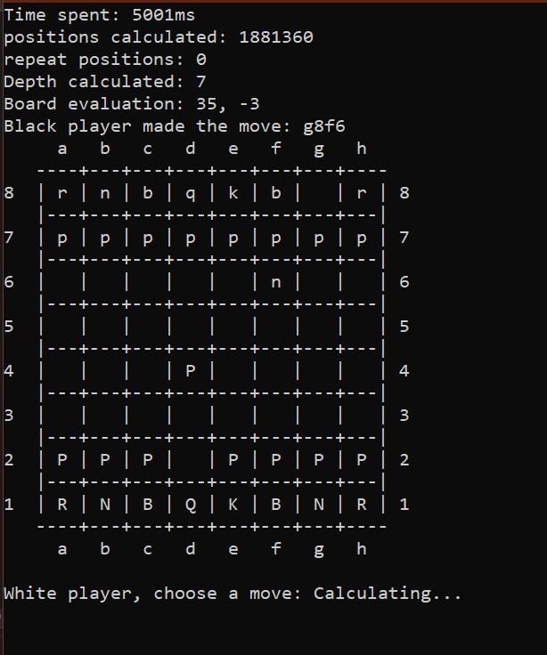

This project was one of my favourite programming projects that I have ever done. Coding algorithms and learning new techniques is just up my alley. This chess AI was made for Metropolia data structures and algorithms course project. In this course we learned and created a chess AI. This was a pair project, and my pair was an excellent coder and classmate Jesse Mursu.
Check out his GitHub here: Mursu37
The goal was to create an efficient AI and then have a tournament between each chess AI. Our chess AI was the most efficient on the class, but we did not win the tournament because of a small programming error. As we tried to optimize it, we made an error when checking for legal moves and lost against another powerful chess AI. Nevertheless, we were proud of our work and I learned a lot from this project.